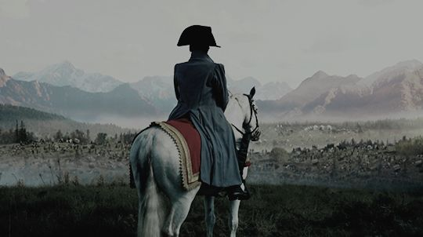

Mengenal Saya Lebih Dekat
Proyek terbaru saya: halaman pencatat kegiatan harian dengan tampilan sederhana.
Saya adalah seorang pelajar SMK yang memiliki ketertarikan pada dunia teknologi, seni, dan kreativitas. Saya senang mempelajari hal-hal baru serta mencoba berbagai kegiatan yang dapat menambah pengetahuan dan pengalaman.
Salah satu bidang yang saya minati adalah teknologi informasi, khususnya pemrograman dan pengembangan website. Saya tertarik memahami bagaimana sebuah program dibuat dan bagaimana teknologi dapat digunakan untuk membantu kehidupan sehari-hari.
Selain teknologi, saya juga memiliki hobi membuat desain karakter. Saya senang menciptakan karakter dengan penampilan, kepribadian, dan latar belakang cerita yang berbeda. Bagi saya, desain karakter merupakan cara untuk menuangkan imajinasi dan mengembangkan kreativitas.
Saya juga memiliki ketertarikan terhadap sejarah, terutama sejarah dunia, tokoh-tokoh berpengaruh, serta berbagai peristiwa yang membentuk kehidupan manusia. Mempelajari sejarah memberikan saya kesempatan untuk memahami kehidupan dan perkembangan masyarakat.
Dalam mengembangkan kemampuan, saya senang mencoba hal-hal baru dan mempelajari berbagai keterampilan. Saya juga tertarik mempelajari bahasa asing, khususnya bahasa Mandarin, serta meningkatkan kemampuan dalam bidang akademik maupun kreativitas.
Saya menyadari bahwa setiap proses belajar membutuhkan waktu, kesabaran, dan usaha. Oleh karena itu, saya berusaha menjadikan setiap pengalaman, termasuk kesalahan dan tantangan, sebagai kesempatan untuk memperbaiki diri dan berkembang.
Melalui portofolio ini, saya ingin memperkenalkan minat, kemampuan, serta beberapa hal yang sedang saya pelajari dan kembangkan. Saya berharap dapat terus meningkatkan kemampuan, menghasilkan karya yang bermanfaat, dan mencapai tujuan saya di masa depan.